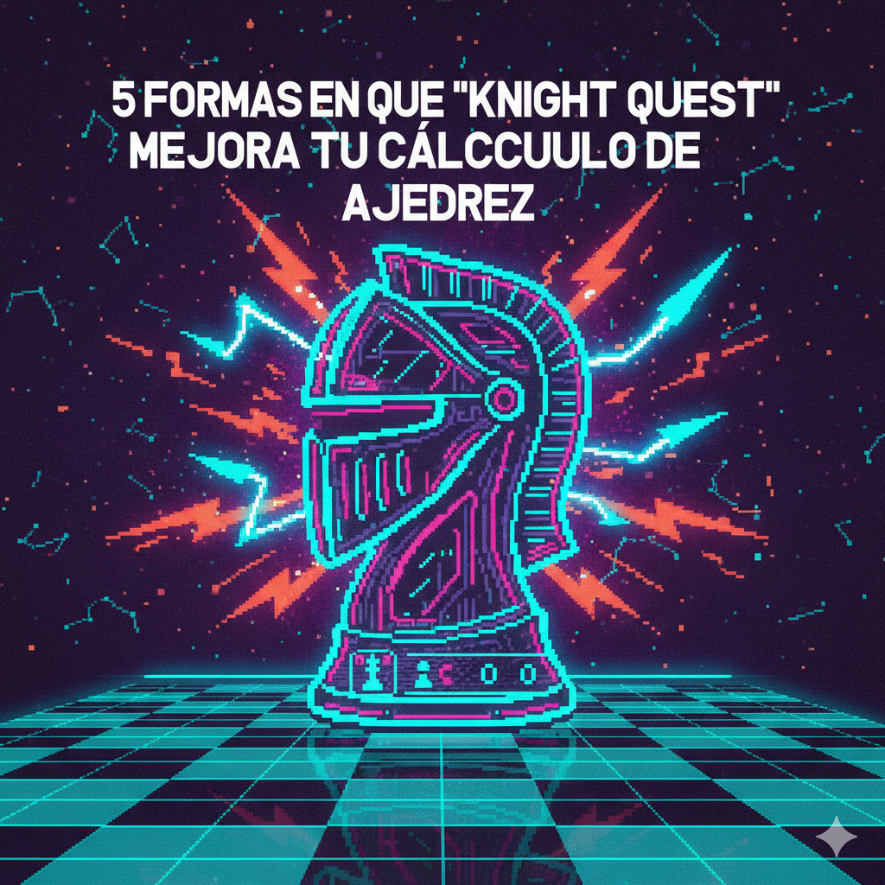

Del Arcade a la Maestría: Entrena tu cerebro, un salto a la vez.
En el ajedrez, el cálculo es el superpoder. Es la habilidad de ver el futuro, de anticipar las jugadas del oponente y de tejer redes tácticas. Pero seamos honestos: es difícil. Y si hay una pieza que pone a prueba nuestro cálculo, es el Caballo. Sus movimientos en "L" son notorios por sorprender tanto a principiantes como a maestros.
Aquí es donde entra Knight Quest, uno de los juegos estrella de nuestro ChessArcade. Más que un simple pasatiempo, es un gimnasio de alto rendimiento para tu cerebro ajedrecístico. ¿Crees que solo estás saltando por un tablero? Piénsalo de nuevo. Estás forjando 5 habilidades de cálculo cruciales.
Esto puede sonar básico, pero es fundamental. Los principiantes *piensan* "dos para adelante, uno al costado". Los jugadores avanzados *sienten* las casillas que controla un caballo. Knight Quest te obliga a realizar cientos de movimientos de caballo de forma rápida y repetida. Con el tiempo, dejas de pensar conscientemente en el movimiento. Se vuelve automático, un reflejo. Esta "memoria muscular" mental libera tu cerebro para que pueda concentrarse en cálculos más complejos, en lugar de gastar energía en verificar si el salto del caballo es legal.
El juego es, en esencia, un ejercicio de visualización. En los niveles más difíciles, no solo buscas el *próximo* salto, sino que intentas visualizar el *camino completo*. Empiezas a "ver" el tablero en tu mente. ¿Qué casillas ya has visitado? ¿Qué zonas del tablero quedan "aisladas"? Esta es la misma habilidad que usas cuando calculas una variante de 5 jugadas en una partida real. Desarrollas una conciencia del tablero que te permite "jugar a ciegas" mentalmente, viendo cómo las piezas interactúan sin moverlas físicamente.
El cálculo no es solo ver un movimiento, es ver una *secuencia*. Knight Quest te castiga si solo piensas un salto adelante. Un movimiento impulsivo puede llevarte a una esquina de la que no puedes salir, obligándote a reiniciar. Para tener éxito, debes planificar: "Si salto a c5, mis siguientes opciones son d7, e6, e4... pero si voy a d7, ¿me quedaré atrapado en la esquina superior?" Este proceso de "si... entonces..." es la definición misma del cálculo profundo. Estás entrenando tu cerebro para pensar en cadenas lógicas largas, una habilidad vital para finales y ataques complejos.
Después de jugar varias partidas, empezarás a ver patrones. Notarás que un caballo en el centro (como e4) es un "monstruo" con 8 movimientos, mientras que un caballo en la esquina (como a1) es un "inválido" con solo 2. Aprenderás a identificar "circuitos" y "rutas seguras". En una partida real, esto se traduce en una habilidad instantánea para:
El componente "Arcade" de Knight Quest es su arma secreta. No solo tienes que encontrar el camino, tienes que hacerlo *rápido*. El ajedrez competitivo se juega con reloj. No tienes 10 minutos para encontrar una táctica simple. Knight Quest entrena tu velocidad de procesamiento. Te obliga a evaluar múltiples "movimientos candidatos" (los 8 posibles saltos) y descartar los malos a una velocidad sobrehumana. Estás entrenando tu cerebro para ser no solo *preciso*, sino también *eficiente*.
No subestimes el poder de este "simple" juego. Cada nivel que completas en Knight Quest es una repetición en el gimnasio mental. Estás construyendo las bases para un cálculo más rápido, profundo y preciso.
¿Listo para dejar de adivinar y empezar a calcular?
¡Jugar a Knight Quest Ahora!